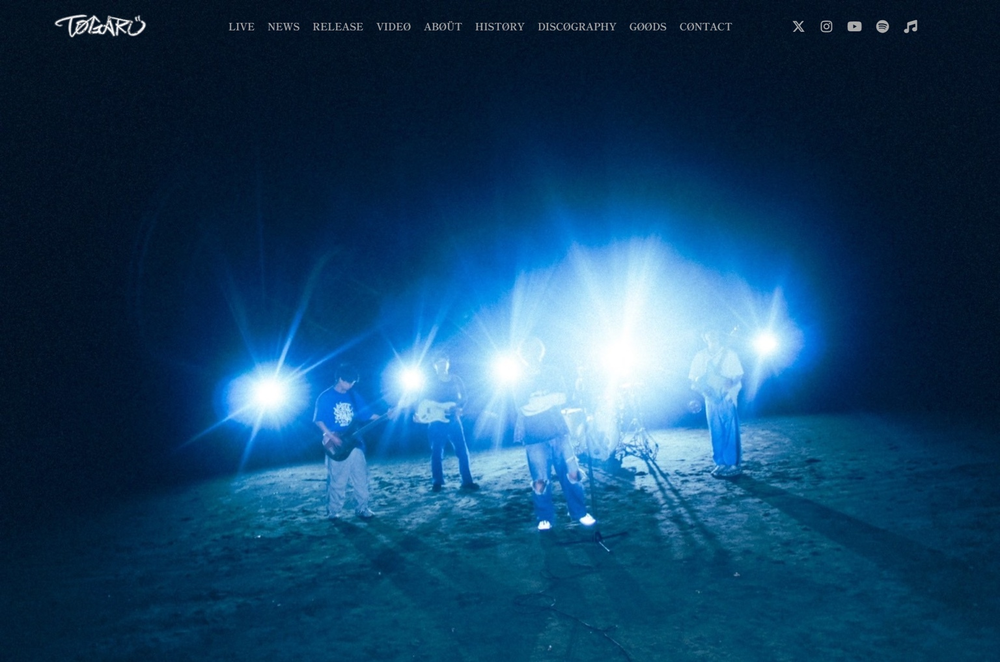
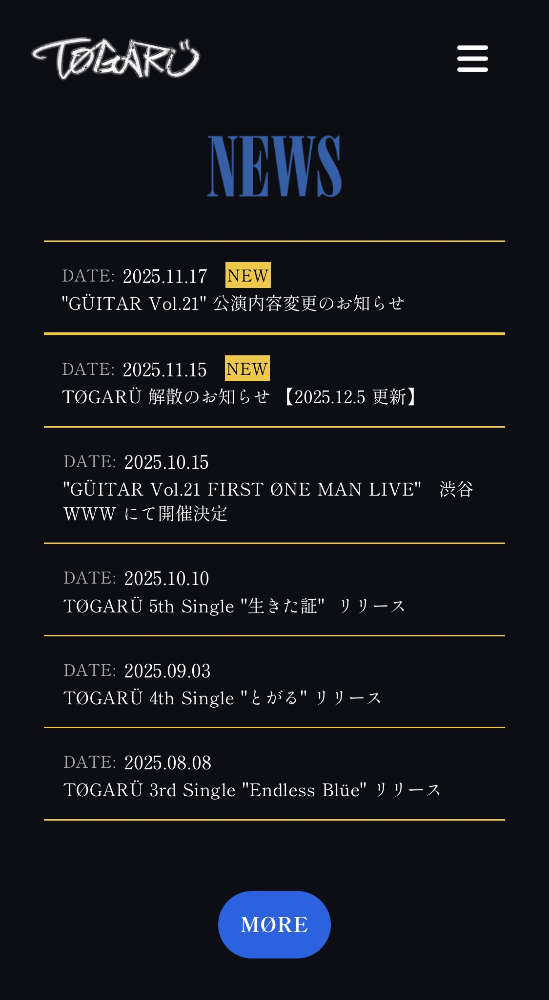
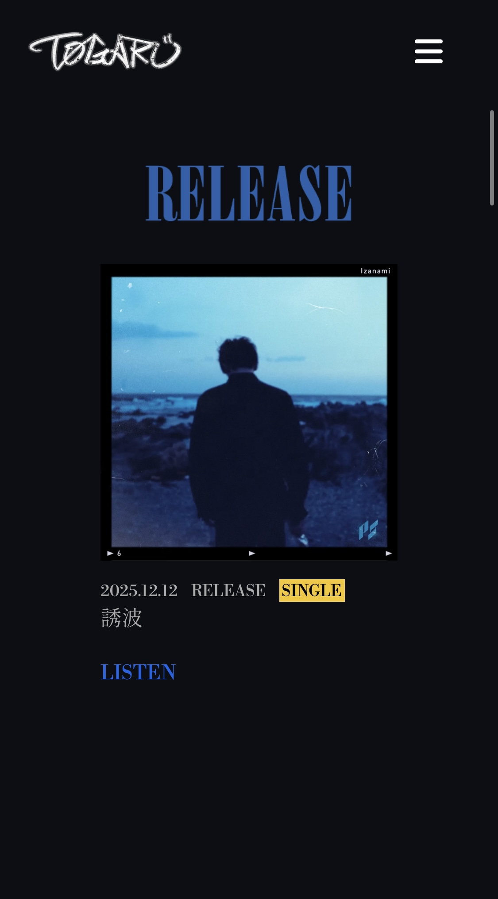
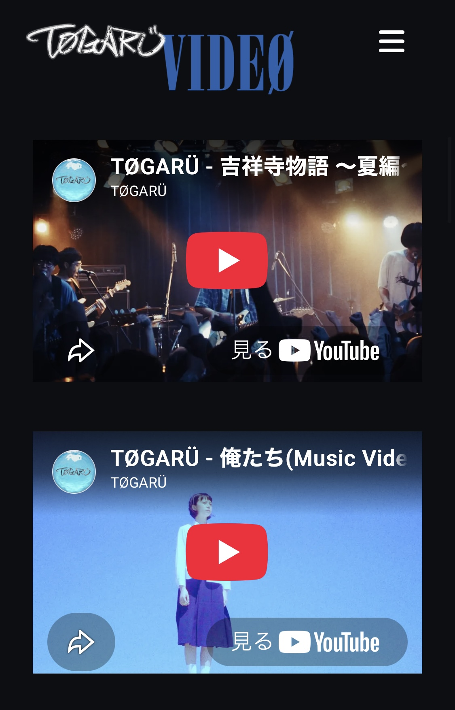
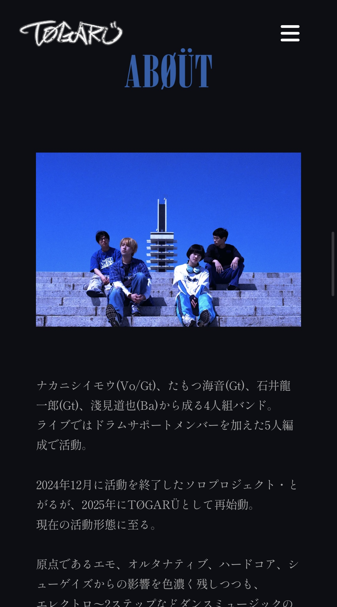
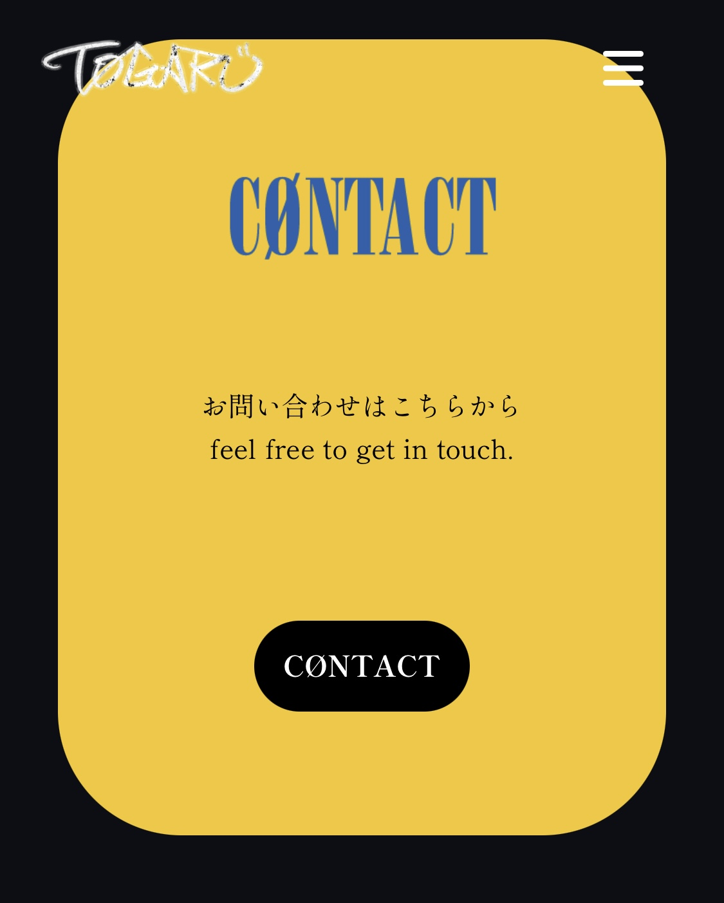
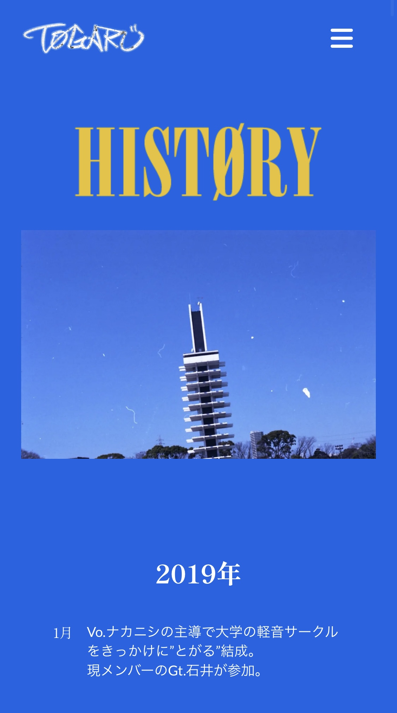
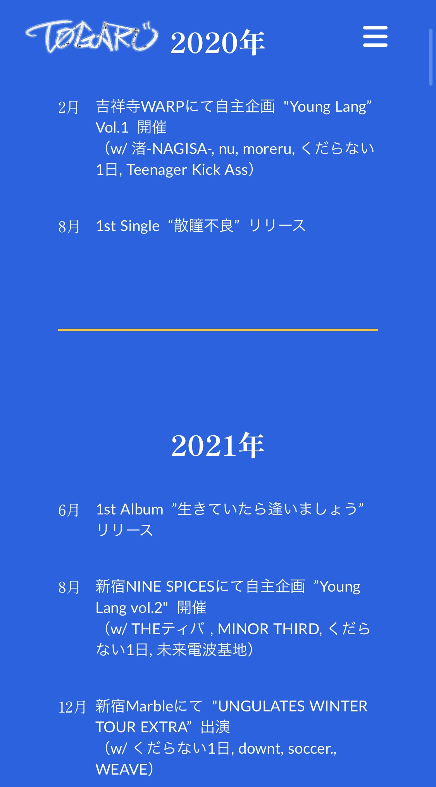

TØGARÜOfficial Website.

One place.
One direction.
バンドに関する情報をひとつにまとめ、TØGARÜを知った人がライブへ足を運ぶきっかけをつくることを目的に、公式ウェブサイトを制作。
バンドの情報を集約し、ライブへの動員につなげる。
企画、アートディレクション、ビジュアルデザイン、ウェブデザイン、文章作成、構築。
STUDIO／レスポンシブウェブサイト
企画からデザイン、構築、公開まで。
黒を基調に、青いタイポグラフィとライブ写真を組み合わせたビジュアル。
NEWS、RELEASE、VIDEO、ABOUT、HISTORY、CONTACT。
Design
Concept.
ライブ写真の強い印象と、情報を読み進めやすいシンプルな構成を両立させることを目指しました。
黒をベースに青いタイポグラフィを主役として配置し、黄色をアクセントに使用。ライブ写真の熱量を受け止めながら、文字情報が埋もれないコントラストを設計しました。
大きな写真、タイポグラフィ、余白のバランスを調整し、バンドの持つ空気感を損なわずに情報を伝えるビジュアルにまとめています。
黒を基調に、青と黄色をアクセントとして使用。
青いタイポグラフィを印象的に見せ、視線を誘導。
ライブ写真を大きく配置し、バンドの空気感を伝える。
余白と情報のまとまりを整え、読み進めやすい構成に。
Design
Direction.
ライブ写真の強い印象と、情報を読み進めやすいシンプルな構成を両立させることを目指しました。
黒をベースに青いタイポグラフィを主役として配置し、黄色をアクセントに使用。ライブ写真の熱量を受け止めながら、文字情報が埋もれないコントラストを設計しました。
大きな写真、タイポグラフィ、余白のバランスを調整し、バンドの持つ空気感を損なわずに情報を伝えるビジュアルにまとめています。
黒を基調に、青と黄色をアクセントとして使用。
青いタイポグラフィを印象的に見せ、視線を誘導。
ライブ写真を大きく配置し、バンドの空気感を伝える。
余白と情報のまとまりを整え、読み進めやすい構成に。
Clear paths
to the music.
バンドの活動をひとつの場所で把握できるよう、コンテンツを役割ごとに整理。初めて知った人にも、以前から応援している人にも必要な情報へアクセスしやすい構成にしました。
最新の活動やライブ情報を確認できる場所。
音源や映像を通して、バンドの作品に触れられる構成。
プロフィールと過去の活動をまとめ、バンドの背景を伝える。
問い合わせや各種リンクへ迷わず進める導線。
From idea
to launch.
企画、アートディレクション、構成設計
ビジュアルデザイン、Webデザイン、文章作成
STUDIOを使用したサイト構築、レスポンシブ調整
公開までの一連の工程を担当
Tools &
Technologies.
Website
Views.







Beyond
information.
サイト公開後、SNSではサイトを歓迎する声が見られました。バンドの歴史が掲載されていることに驚いたという反応や、これまでの活動に感銘を受けたというコメントを直接いただきました。
ライブの動員にも小幅な増加が見られました。大きな数値的成果を示すものではありませんが、情報を集約するだけでなく、バンドの背景や魅力を伝える場として、サイトが役割を果たしたと感じています。
サイト公開を歓迎する声がSNSで見られた。
バンドの歴史や過去の活動を知ってもらう機会につながった。
ライブの動員に小幅な増加が見られた。
情報を整理するだけでなく、活動の背景や魅力を伝える場所になった。